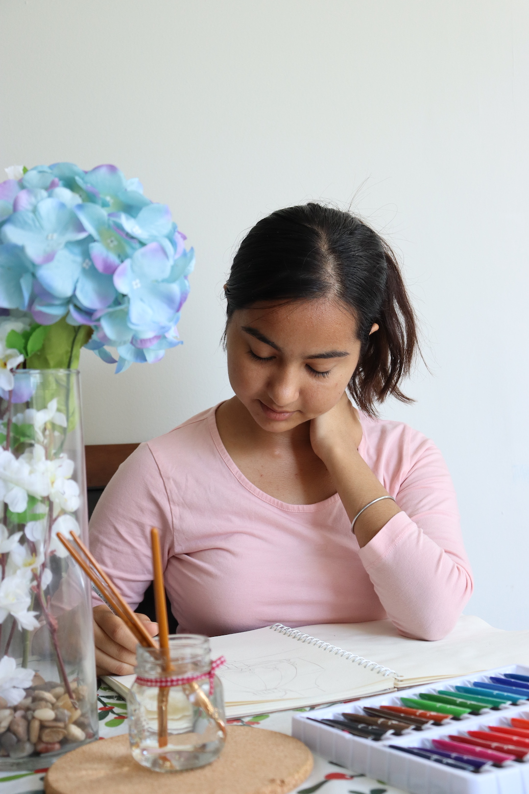

My picture
Funfact about me
I find a lot of inspiration for my art in nature. The beauty of the natural world, with its vibrant colors and intricate details, often becomes the focus of my creations. Whether I'm painting a peaceful forest, a majestic mountain, or a delicate flower, my art is not just about showcasing my talent but also about expressing my deep love for nature. My passion for both art and the environment comes together in my work, allowing me to share my appreciation for nature through my creative expressions.
Some the other imformation about me
- Student number: 041100453
- Program name: Interactive media design
- Course code: MTM6201_303